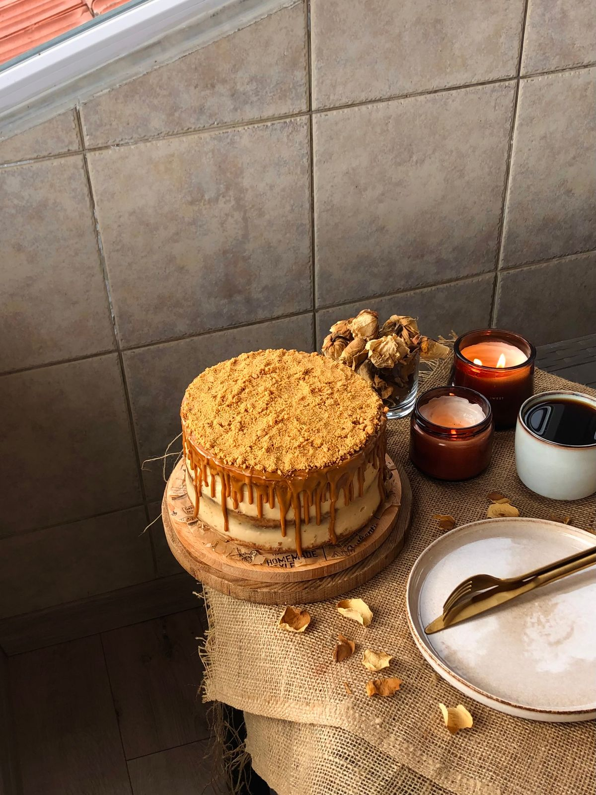

05 / Quante fette
Una guida per la tua torta
Diametro
Altezza / piani
Porzioni
18 cm
1 piano, 10 cm
8-10 fette
22 cm
1 piano, 12 cm
14-16 fette
18 + 26 cm
2 piani
30-35 fette
Calcolate su fette da 100 grammi, tagliate a spicchio.
